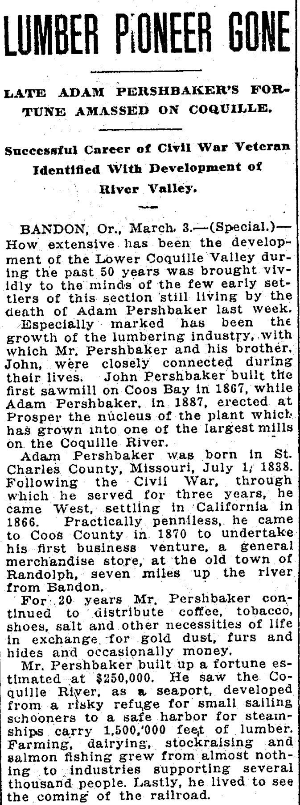
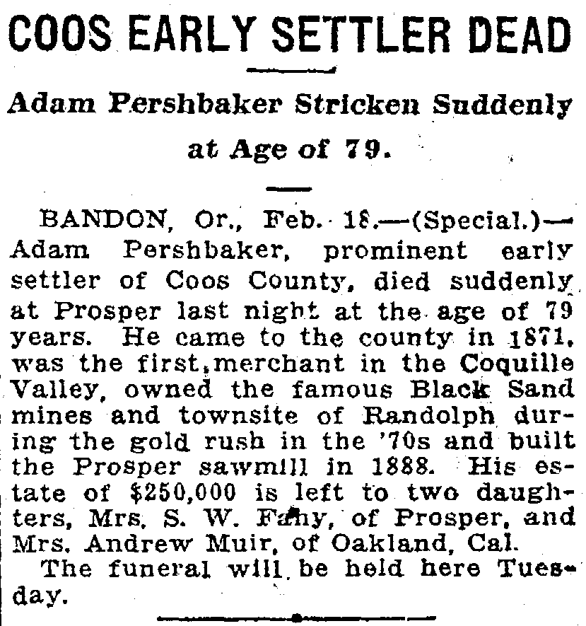

Adam Pershbaker 1838–1917
3× great-grandfather of Genevieve Elisa Symanski Nelson, wife of Peter.
Adam Pershbaker was born on 1 Jul 1838 in Missouri, United States1. He died on 17 Feb 1917 in Prosper, Oregon, United States2.
Adam Pershbaker founded the town of Prosper, Oregon.
Family
- Partner
- Rosella Dame d. 1913
- Children
- Ruby Pershbaker d. 1973 tradition
Life events
| Event | Date | Place and details |
|---|---|---|
| Born | 1 Jul 1838 | Missouri, United States1 |
| Died | 17 Feb 1917 | Prosper, Oregon, United States2 |
Records


Sources
- Lumber Pioneer Gone: Late Adam Pershbaker's Fortune Amassed On Coquille, The Sunday Oregonian (Portland, Oregon), 4 March 1917, p. 49.
John Pershbaker built the first sawmill on Coos Bay In 1867, while Adam Pershbaker, in 1887, erected at Prosper the nucleus of the plant which has grown into one of the largest mills on the Coquille River. Adam Pershbaker was born in St. Charles County, Missouri, July 1; 1838. Following the Civil War, through which he served for three years, he came West, settling in California in 1866. Practically penniless, he came to Coos County in 1870 to undertake his first business venture, a general merchandise store, at the old town of Randolph, seven miles up the river from Bandon.
Translation: John Pershbaker built the first sawmill on Coos Bay in 1867, while Adam Pershbaker, in 1887, erected at Prosper the nucleus of the plant which has grown into one of the largest mills on the Coquille River. Adam Pershbaker was born in St. Charles County, Missouri, July 1, 1838. Following the Civil War, through which he served for three years, he came West, settling in California in 1866. Practically penniless, he came to Coos County in 1870 to undertake his first business venture, a general merchandise store, at the old town of Randolph, seven miles up the river from Bandon.
Born 1 July 1838 in St. Charles County, Missouri; served three years in the Union Army during the Civil War; came West to California in 1866 and settled in Coos County, Oregon in 1870/1871 (where his brother John Pershbaker had built the first sawmill on Coos Bay in 1867); opened the first general merchandise store in the Coquille Valley at Randolph (seven miles up the Coquille River from Bandon), owned the Black Sand gold mines and townsite of Randolph in the 1870s, and in 1887/1888 erected at Prosper one of the largest sawmills on the Coquille River.
- Coos Early Settler Dead: Adam Pershbaker Stricken Suddenly at Age of 79, The Morning Oregonian (Portland, Oregon), 19 February 1917, p. 4; and Oregon Journal, 19 February 1917, p. 8.
COOS EARLY SETTLER DEAD Adam Pershbaker Stricken Suddenly at Age of 79. BANDON, Or., Feb. IS.—(Special.)— Adam Pershbaker, prominent early settler of Coos County, died suddenly, at Prosper last night at the age of 79 years. He came to the county in iS71, was the first,merchant in the Coquille Valley, owned the famous Black Sand mines and townsite of Randolph during the gold rush in the ’70s and built the Prosper sawmill in 1888. His es- i tate of $250,000 is left to two daughters, Mrs. S. W. Fdhy, of Prosper, and Mrs, Andrew Muir, of Oakland, Cal. The funeral will.be held here Tuesday.
Translation: COOS EARLY SETTLER DEAD / Adam Pershbaker Stricken Suddenly at Age of 79. BANDON, Or., Feb. 18.—(Special.)—Adam Pershbaker, prominent early settler of Coos County, died suddenly at Prosper last night at the age of 79 years. He came to the county in 1871, was the first merchant in the Coquille Valley, owned the famous Black Sand mines and townsite of Randolph during the gold rush in the '70s and built the Prosper sawmill in 1888. His estate of $250,000 is left to two daughters, Mrs. S. W. Fahy, of Prosper, and Mrs. Andrew Muir, of Oakland, Cal. The funeral will be held here Tuesday.
Died suddenly Saturday night, 17 February 1917, at Prosper, Coos County, Oregon, age 78 (reported as 79); funeral held at Bandon, Oregon on Tuesday, 20 February 1917; left an estate estimated at $250,000–$850,000 to his two daughters, Mrs. S. W. Fahy of Prosper, Oregon, and Mrs. Andrew Muir of Oakland, California.